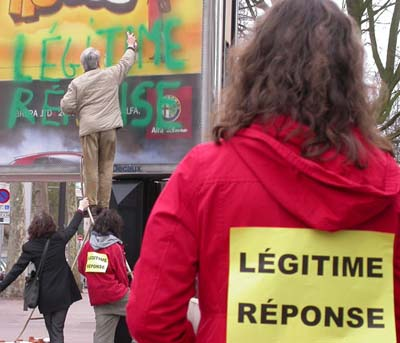

| |
Site dédié à la publication d'informations communiquées par le Collectif des déboulonneurs. En aucun cas ce site n'appelle à des actions illégales. | |
 |
||
|
Accueil du site > Rouen > Compte rendu de l’action du Collectif des déboulonneurs de Rouen, le 25 mars (...)
25 activistes, dont trois jeunes enfants dans des poussettes ; un panneau déroulant JC Decaux barbouillé avec "Légitime réponse" ; un barbouilleur conduit à l’Hôtel de police, où il n’est resté que 1h30 ; 1 journaliste indépendant, 2 photographes. Pourquoi que 25 activistes non-violents ? Temps maussade, fatigue après la mobilisation contre le CPE.... ? Pendant que le barbouilleur inscrit son graffiti, une trompette (une vraie ! ) retentit, donnant un air de fête sans nulle autre pareille, avec des massues de cirque jouant dans les airs. Chacun des activistes a dans le dos une page A4 jaune, avec dessus "Légitime réponse", ou "Pub = agression"... , un très bon visuel. Une distribution d’environ 200 petits tracts s’est faite auprès des passants et des automobilistes arrêtés aux feux rouges. Dès que le barbouilleur descend de son escabeau, une voiture de police passe par hasard par là... Il faut dire que le choix du panneau était audacieux puisque celui-ci est situé à 400 m de l’Hôtel de police de Rouen ! Que voient les policiers ? Deux activistes en train de partir d’un bon pas avec l’escabeau. Ils ont cru sur le moment que le barbouilleur était l’un d’eux. Les 2 activistes sont stoppés par les 3 policiers à 100m du panneau barbouillé. D’autres les rejoignent alors. Petit moment de flottement. L’apaisement vint quand une activiste du groupe leur dit : " Vous cherchez le barbouilleur ? Mais regardez, il est là-bas, sous le panneau, il vous attend. il s’agit d’une action non-violente de désobéissance civile". Plusieurs du petit groupe avec l’escabeau ont droit à une vérification de leur identité, ce qui ne peut avoir aucune suite. Au total, trois voiture de police se sont déplacées. Le barbouilleur est arrêté sous le panneau barbouillé, enfin ! Applaudissements de la foule... Le barbouilleur est emmené à l’Hôtel de police dans la berline policière. Il n’a pas été mis au violon comme les autres précédentes. L’audition est réalisée par un officier de la police judiciaire, avec le traditionnel " je n’ai rien à déclarer " pour tout ce qui ne concerne pas la stricte identité du barbouilleur. Il reconnaît être l’auteur du graffiti et il explique pourquoi il l’a écrit sur la vitre du dispositif publicitaire, avec deux bombes de peinture ne dégradant pas la couche d’ozone, lesquelles sont confisquées. 
La fin de la déposition a été rigolote : l’officier de la police judiciaire demande au barbouilleur s’il s’engage à ne plus jamais faire de graffiti. " Je n’ai rien à déclarer ". " Bon, disons durant un an ? ". "Je n’ai rien à déclarer". " Et pendant un trimestre ? ", " je n’ai rien à déclarer ". " Durant un mois ? ", je n’ai rien à déclarer". ... et le barbouilleur d’abandonner exceptionnellement sa réponse habituelle, et répond : " si vous voulez, je m’engage à ne plus faire aucun barbouillage ce week-end ". Ce fut noté et le barbouilleur signe sa déposition. À noter que les policiers ont toujours été courtois. Cette action du 25 mars nous montre que nous avons encore à peaufiner nos interventions à Rouen, à nous renouveler ... L’absence des médias locaux est consécutive, semble-t-il, de la surcharge de travail que leur occasionne le foutu CPE. Le Collectif des déboulonneurs de Rouen est en pleine forme et vous salue fraternellement. D’autres photos sur ce lien et dans notre galerie |
|
Site utilisant SPIP - Hébergement Ouvaton
|